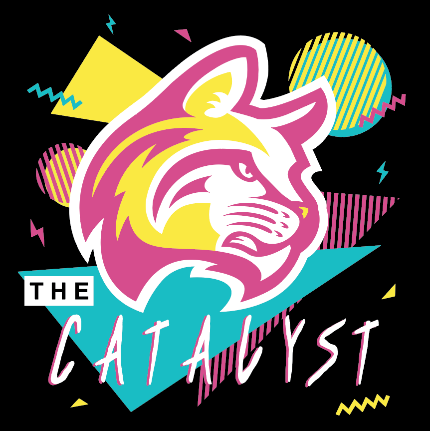

Design Night

On Thursday, January 24, 2019, I attended the first IWU AIGA Design Night of the spring semester. This was a perfect opportunity to further critique and receive feedback on my design for Project One: Community. The first half of the night was spent actually working on the project. I had just finished cutting and spraying my designs to the matboard. I showed the students present and asked for their thoughts on the design. There were some minor suggestions, but no major critiques that were critical enough to actually change the design. One of the most thought-provoking comments was the idea that the wildcat head logo was too prominent. They suggested that I switch the positions of the “Catalyst” font and the wildcat head logo. This would allow the student section name to have more importance. After the discussion, I wrapped up the physical design by creating the back name card for the matboard.
The latter half of the night I observed what other students were working on in their classes. One group of students were working on the new visit day posters that will be hanging in the Beard Art Center hallway. Since I am only a media design minor, and a computer information systems major, I learned a lot about the process the design majors follow. Almost all students there were upperclassmen, so they have had experience for four years. We discussed positioning elements techniques within given dimensions, such as using overlays. The rest of the night, I worked on the learn stage for the first project. Overall, the night was an enlightening opportunity to receive feedback and observe the work of others.